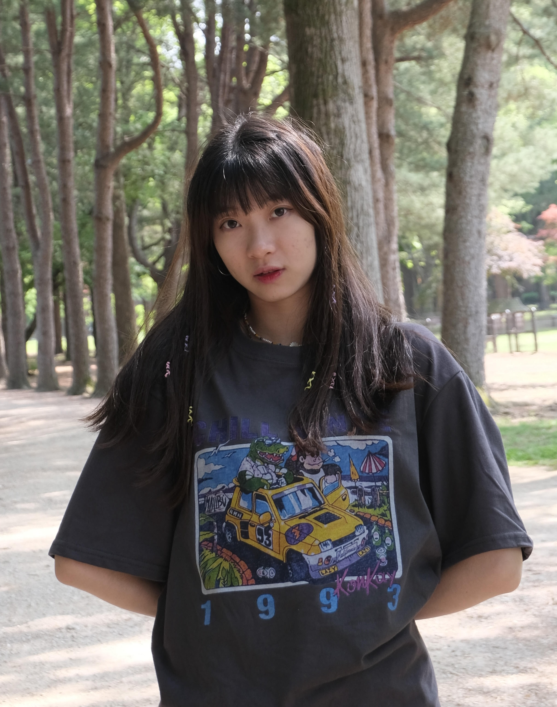
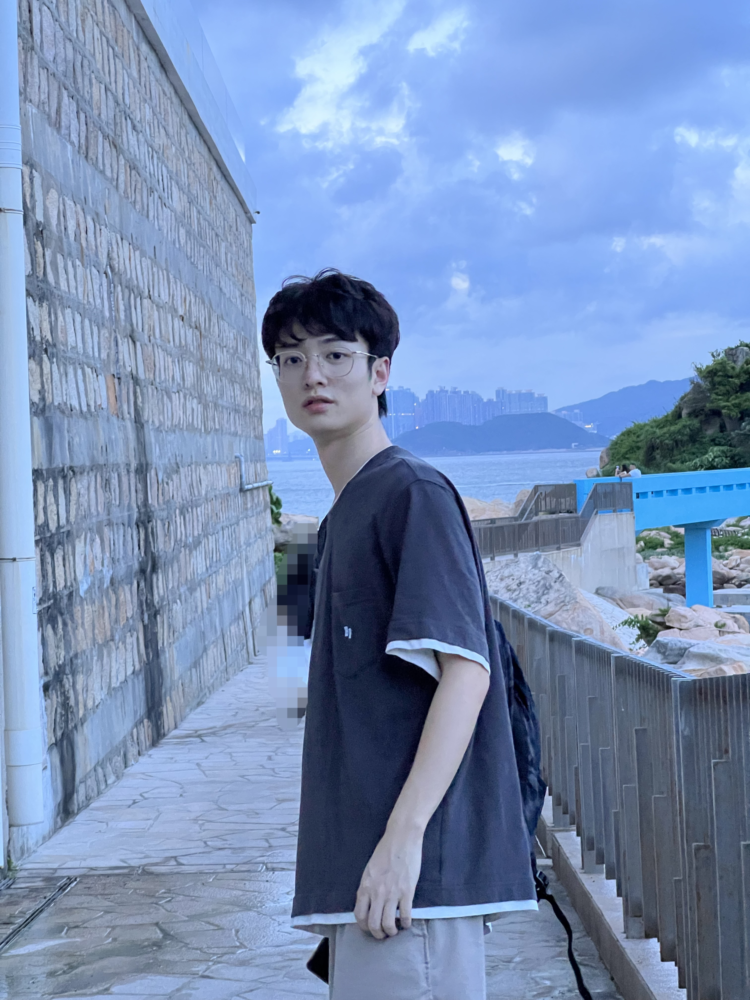
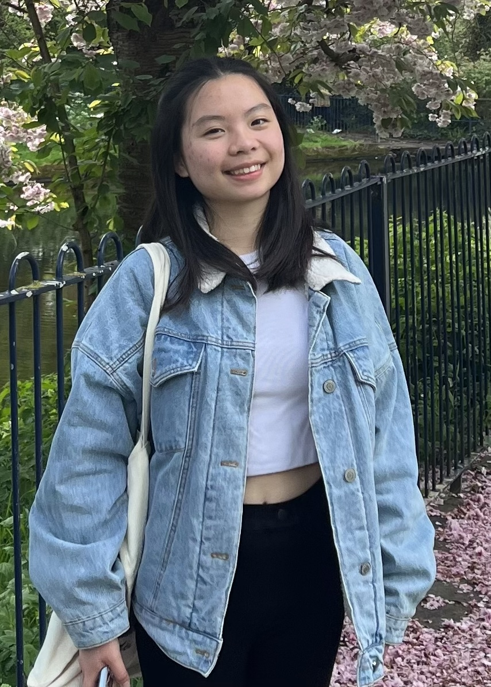
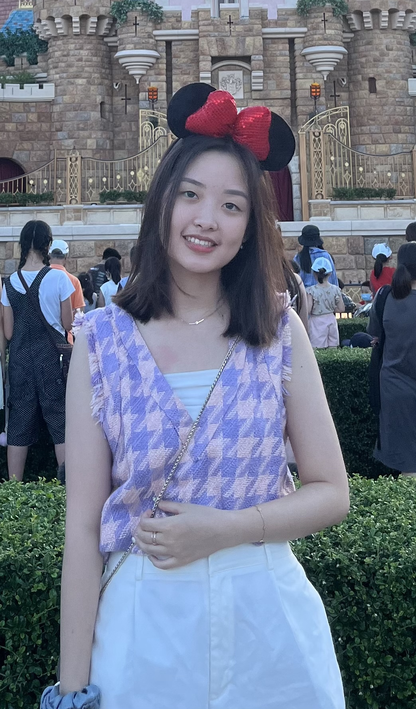
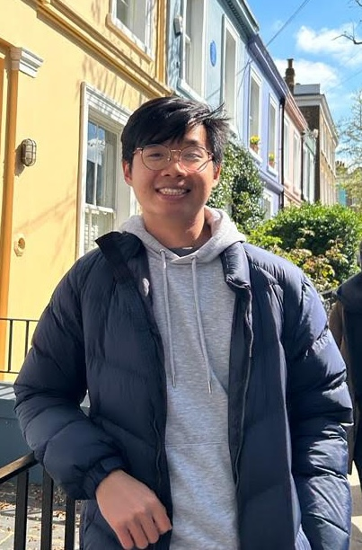

Residence Tutors
Residence Tutors are postgraduate / final year / research students or staff members of the University. They are responsible for assisting the Residence Master of the assigned hall in the provision of pastoral care and intellectual guidance to residents, organizing hall activities, and maintaining peace, order and good administration of the hall.
Current Residence Tutors

HRC Tutor
1/F & 2/F RT: Phoebe (202B)
Hi Wuddies, this is Phoebe. I am 3rd year student majoring Chinese and
History in CityU and minoring Education Etudies in EDUHK. Also, I am the only one local HRC
residence tutor in HMT this year, so if anyone wants to know more about HK, in any area,
feel free to approach me!! Don't be shy to say hello to me if we meet in the lift.

Returning Tutor
3/F & 4/F RT: Lincoln (302A)
Greetings, Hall 9 residents! I'm Lincoln, your Residence Tutor (RT),
and I'm thrilled to welcome you to our vibrant community here at CityU Hong Kong. Hall 9
isn't just a place to stay; it's a home where diverse individuals come together to create a
dynamic living experience. Known for its calming atmosphere and breathtaking rooftop ...
ICFD Tutor
5/F RT: Tim (502A)
Hey Wuddies, my name is Tamerlan, but you can call me Timüòä I am 4th
year Mechanical Engineering student, and I am one of your PEK Residence tutorsü§òSome of my
hobbies are basketball and hiking, so if anyone wants to play some ball, reach me out. Hope
that this year we are gonna have some great sport memories together!!!

Advocacy Tutor
6/F RT: Jenika (602A)
Hello guys! I‚Äôm Jenika, you can call me Jen. I come from Indonesia üáÆüá©, year 3, majoring in Asian and International Studies. I handle hall 9‚Äôs social media and the media team. Hit me up for more info about it. If you want to have a chat, don‚Äôt hesitate to hit me up! I enjoy talking a lot! üòú

Events Tutor
7/F RT: Cindy (702A)
Hey everyone! üåü I'm Cindy Falencia Irawan, a third-year computer science major from Indonesia üáÆüá©. When I'm not geeking out ü§ì, you'll find me hanging with friends, reading some good books, or binge-watching k-dramas. Hall 9 is like my second home‚ÄîI love the friendly vibes, awesome friends, and all the cool moments we share. If you're planning to make some fun event in Hall 9 or just want to chit chat, hit me up anytime! Let's make our hall life even more awesome together. üéâ‚ú®
Advocacy Tutor
8/F RT: Taalai (802B)
Hey! I am Taalai, final year student majoring in computer science. 4 things you would most probably catch me doing are: calisthenics, reading, coding, and playing chess. So, if you want to play a blitz chess game, do sports together, crack leetcode questions, or have chat, just knock on my door! (btw, i made this website with my team. that's calm innit)
Discipline Tutor
9/F RT: Akul (902A)
Hey everyone! This is Akul, I‚Äôm a third year data science student and this is my second year in Hall 9. I serve as the Discipline Tutor and am continuously working to ensure a harmonious and peaceful environment in Hall 9 for you all. Apart from my studies, I do enjoy sports especially chess and cricket and sometimes reading a bit of finance here and there. Do feel free to contact me about anything that bothers you or even if you just wanna have a chat. Anyways, enjoy your stay here in the Hall, and we as the HMT shall try our very best to make your stay enjoyable! ‚úåü誂úåüèª

Facilities and Finance Tutor
10/F RT: Felix (1002A)
Hello, Wuddies! Don't be afraid to say hi if you see me, I won't bite you!